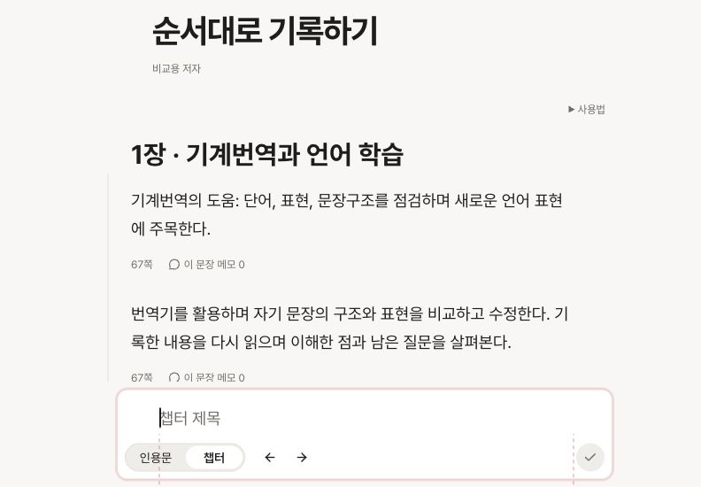
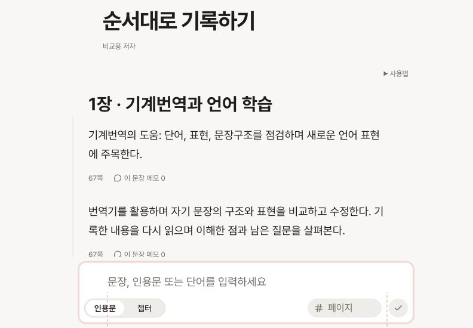
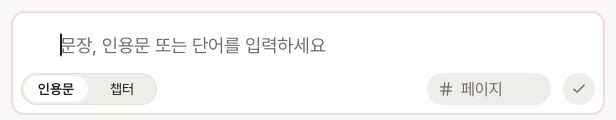

선택한 입력창 디자인을 실제 앱에 반영했습니다
챕터 모드에서만 선택 버튼 오른쪽에 투명한 화살표를 표시합니다. 인용문 모드에는 화살표와 빈 공간이 없습니다.
단계 이동 시 입력창 폭이 200ms 동안 바뀌며, 소제목 저장 후 인용문은 같은 소제목 아래에서 이어집니다.
1024×768 실제 앱 정렬, 로컬 저장 흐름, 자동 테스트 564개, 타입 검사와 제품 빌드가 통과했습니다.
2026-10-06 · 브랜치 codex/410pages-ui-components. 사용자가 구현·커밋·푸시를 승인했습니다. 커밋 식별자와 원격 푸시 결과는 작업 완료 메시지에 표시합니다.
무엇을 바꿨는가
| 결정 주체 | 반영한 내용 |
|---|---|
| 사용자 결정 | 인용문/챕터 선택형, 원형 체크 저장, 챕터 전용 오른쪽 화살표 묶음. → 하위 / ← 상위. 배경 없는 Pill 클릭 영역과 200ms 폭 전환. |
| 사용자 결정 | 최상위에서 ← 숨김. 현재 저장된 챕터 단계 +1까지 하위 추가. 위치 취소·중복 상단 문구 제거. 1024px 이상 데스크톱 모드. |
| Codex 결정 | 화살표 이동에 기존 계층 계산을 연결. 최대 깊이에서 버튼이 잠기거나 최상위에서 버튼이 사라질 때 키보드 포커스를 반대 화살표로 복구. 마우스 클릭에서는 입력 커서 유지. |
| Codex 결정 | 좁은 화면에서는 본문 스크롤바의 실제 폭을 입력부에도 반영. 스크린리더용 위치 설명, 저장 중 잠금, 움직임 줄이기 설정 지원. 작업대의 별도 화살표·폭 보정을 제거하고 제품 컴포넌트 사용. |
| 기존 동작 유지 | 저장 순서·중간 삽입·초안·페이지 입력·기존 키보드 조작·책 밖/PDF 입력부. 소제목 저장 후 인용문 전환과 이어 쓰기 위치 보존. 데이터 저장 구조 변경 없음. |
| 앞서 승인한 수정 | 앱 테마와 시스템 테마가 다를 때 오류 문구가 흐려지는 원인을 공통 테마 판단 기준으로 수정. 너비 1024px 경계를 데스크톱에 포함. |
1024px 기준 화면



검증 결과와 한계
| 검증 | 확인 결과 |
|---|---|
| 실제 앱 · 1024×768 | 데스크톱 모드. 입력 테두리 592px, 입력·본문 글자 영역 모두 500px. 시작 380px / 끝 880px 일치. 입력부 높이 102px. |
| 제품 UI · 로컬 저장 | 1.1 아래에 1.1.1 저장 → 인용문 두 개 연속 저장. 두 인용문과 입력창 모두 같은 깊이이며 글자 영역 436px. 양 끝선 차이 0px. 다음 작성 기준은 마지막 인용문으로 전진. |
| 단계·키보드 | 최상위에는 오른쪽만. 빈 책은 하위 이동 잠금. 기존 3단계 이후에도 4단계까지 준비 가능. 입력·커서 보존, 경계에서 포커스 복구 확인. |
| 폭·테마·모션 | 657px에서 본문 스크롤바 4px 출현/소멸에 맞춰 보정 4px/0px. 소제목 입력·본문 모두 505px. 375px Night에서 44px 조작 영역·묶음 줄바꿈·가로 넘침 없음. 전환 종료 이벤트 0.2초, 움직임 줄이기에서 0초. |
| 자동 검사 | npm test: 80개 파일 / 564개 테스트 통과. npx tsc --noEmit, npm run build, git diff --check 통과. 관련 경계·초안·저장 실패·포커스 회귀 검사 포함. |
| 독립 검토 | gpt-6-astra / high 1명으로 생산 코드의 계층·저장 잠금·포커스·observer 정리 검토. 확정 결함 없음. 제안한 키보드 경계 확인에서 실제 포커스 이탈을 발견해 수정·재검증. |
| 미검증 사항 | 실제 서버에 새 챕터/인용문 저장, 물리 터치 기기, 다른 브라우저, 애니메이션 프레임 성능, 운영 배포 효과. 빌드의 기존 Browserslist/큰 청크 경고는 유지. |
남은 사용자 결정: 이 구현 범위 안에서는 없습니다.
디자인 검사 · 수정/예외/유지
수정: 키보드 경계에서 포커스가 사라지는 실제 결함, 작업대에 중복될 수 있는 시안 화살표·폭 보정 제거. 보고서 첫 문단의 불필요한 색상 옆선도 제거했습니다.
예외 처리: 사용자가 실제 입력 폭 변화 애니메이션을 요청·승인했으므로 layout-transition은 시안 CSS와 제품 index.css의 파일 범위로 기록했습니다. 실제 줄바꿈과 글자·커서를 유지하기 위한 200ms margin 전환이며 움직임 줄이기에서는 끕니다. 프레임 성능이 측정됐다는 뜻은 아닙니다.
유지: 오류 색 비교 HTML의 기존 Mahler 배경·줄무늬는 원본 비교 조건으로 유지하고 해당 파일에만 예외를 기록했습니다. 제품 테마 전체 CSS를 읽는 로컬 예제의 기존 줄무늬 참고 패턴도 해당 예제 파일에만 예외를 기록했습니다. 테마 팔레트·타이포그래피는 유지했습니다. 이 요청과 직접 관련된 미해결 디자인 경고는 없습니다.
자원과 검토 범위
검토 범위는 누적 승인한 UI 수정·관련 테스트·Policy·HTML 시안입니다. 새 패키지나 저장 구조를 추가하지 않았습니다. 임시 브라우저의 화면 크기/움직임 줄이기 설정을 해제했습니다. 개발 서버와 결과 HTML은 다음 주석 작업을 위해 유지하고, QA 탭은 결과 보고서로 전환합니다. 실제 앱과 사용자 검토 탭은 유지합니다.